Project — Monroe County
Concrete Driveway Restoration in Rochester NY
Failed stone and cobblestone driveway — freeze-thaw heaving had made it a liability. Demolished and removed the existing surface, prepped a proper base with wire mesh reinforcement, and poured new reinforced concrete with expansion joints cut throughout. Before, during, and after photos below from a Rochester-area project representative of the driveway work we take on in Greece, Irondequoit, Webster, Penfield, and nearby Monroe County towns.

Before
Heaved stone and freeze-thaw damage — before demo
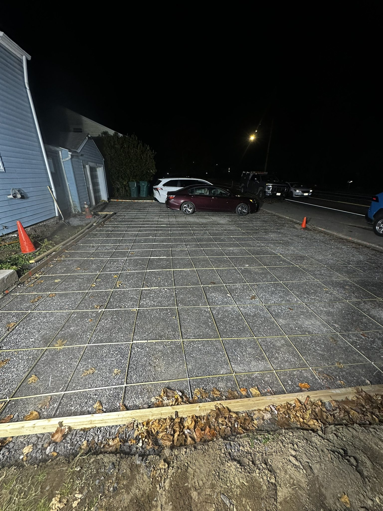
During
Base prepped — wire mesh reinforcement laid before pour
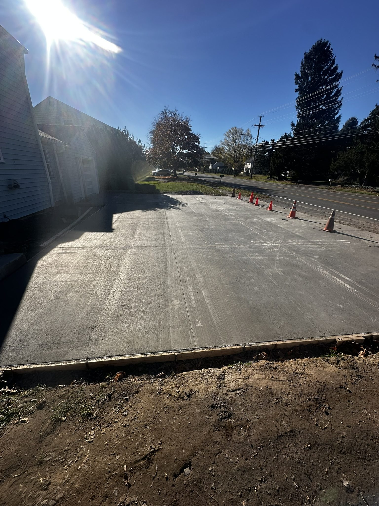
After
Broom-finish concrete — clean finish, expansion joints cut
Why Stone Fails and Concrete Holds Up in Rochester
Stone and cobblestone driveways fail in Rochester for one reason: the bedding underneath shifts. Over 30 freeze-thaw cycles a year work water into every crack and joint — it freezes, expands, and heaves the surface. Once it starts, you're patching individual stones indefinitely while water keeps finding its way toward the foundation.
This job was a full replacement. We demolished and removed the existing surface down to grade, compacted a gravel sub-base, set wire mesh reinforcement on chairs so it rides in the middle of the slab, and poured reinforced concrete. Control joints were cut throughout to control where the slab moves. The result is a surface that handles what Rochester winters throw at it — without the maintenance that stone requires.
Additional photos from the project showing demo, base work, and the finished surface.
Demolition and removal of existing surface
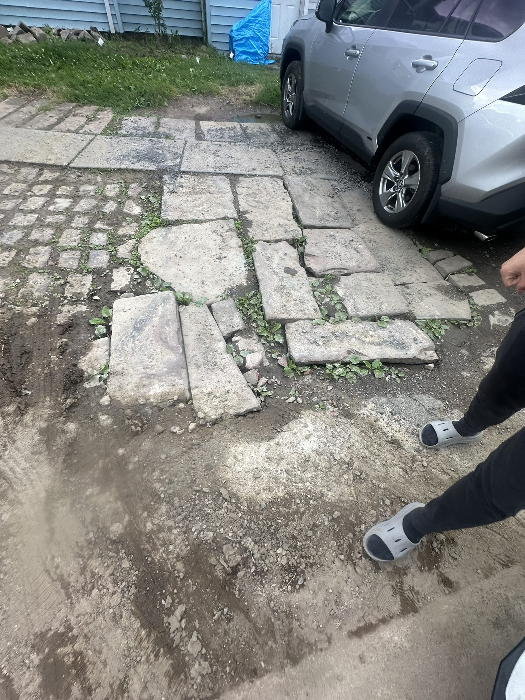
Base preparation
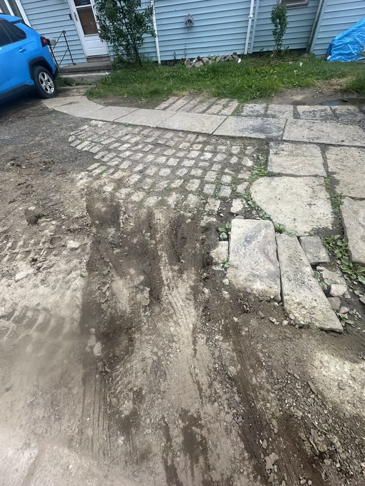
Excavation and grading
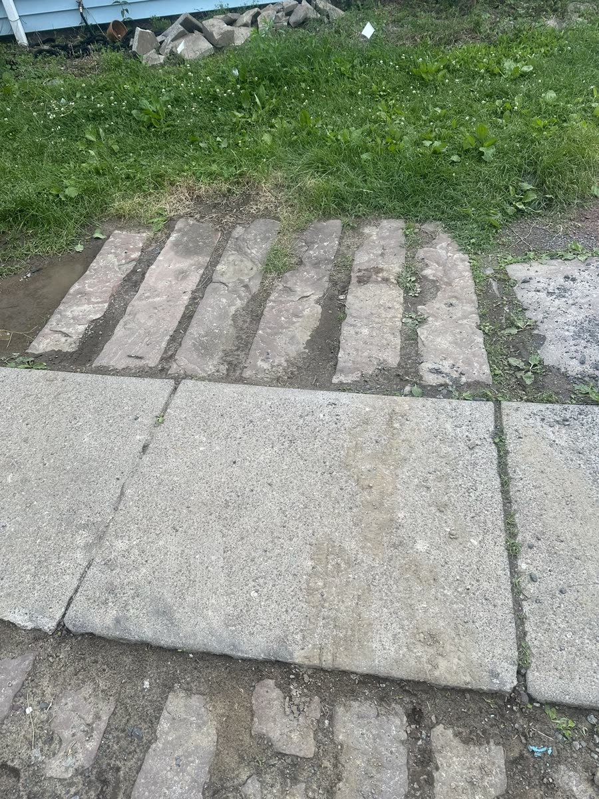
Forms set, ready for reinforcement
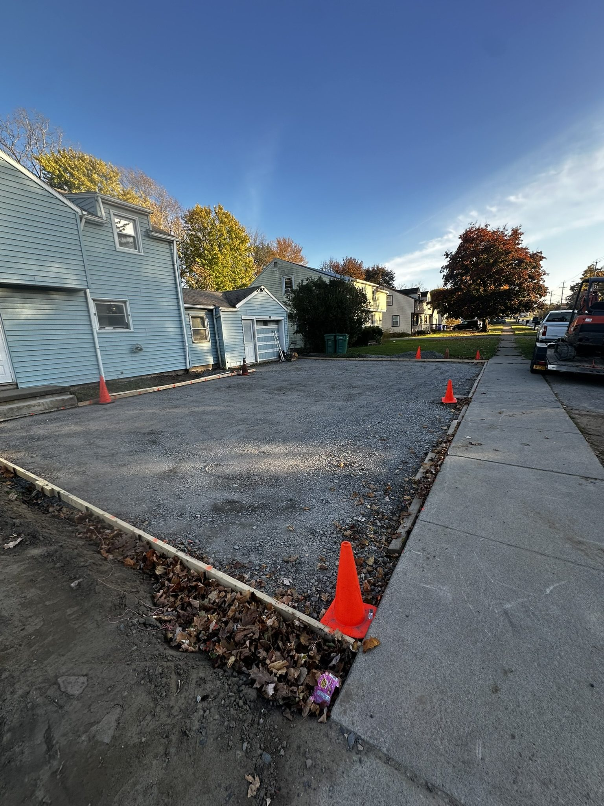
Wire mesh reinforcement in forms
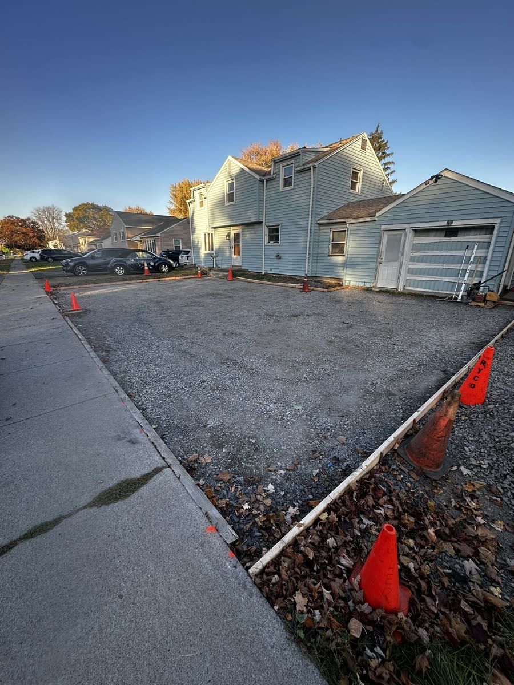
Concrete pour in progress
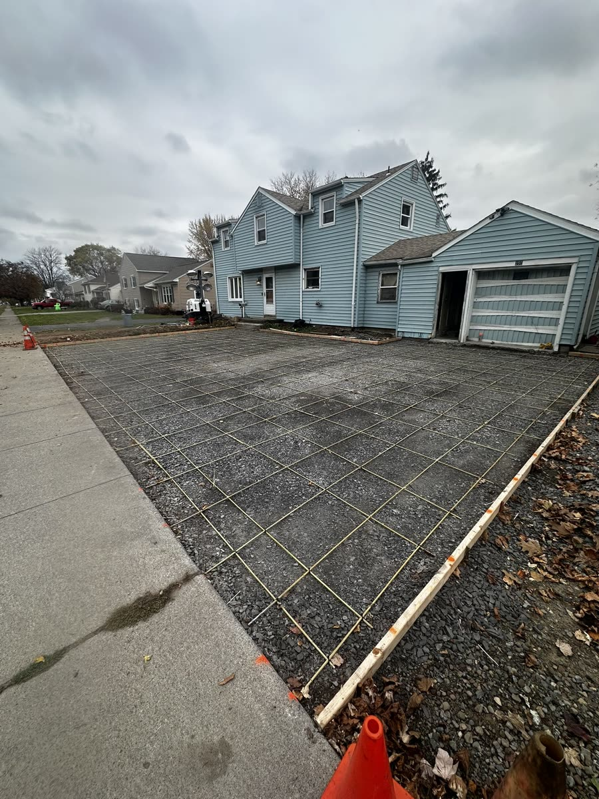
Broom finish applied
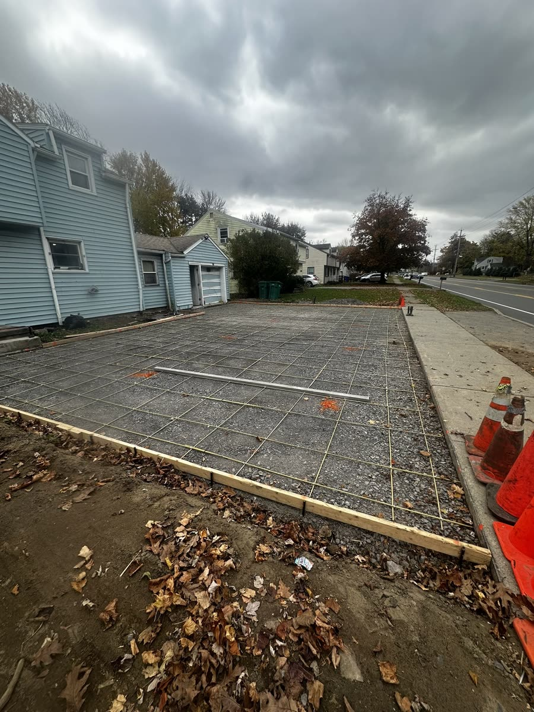
Surface texture detail
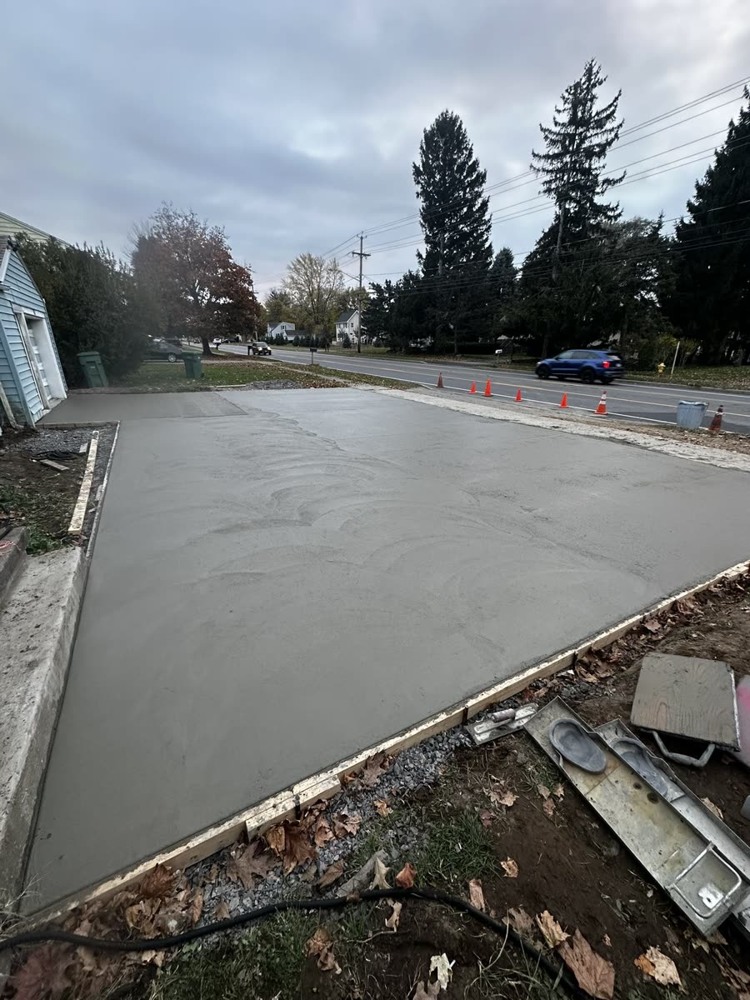
Expansion joints cut
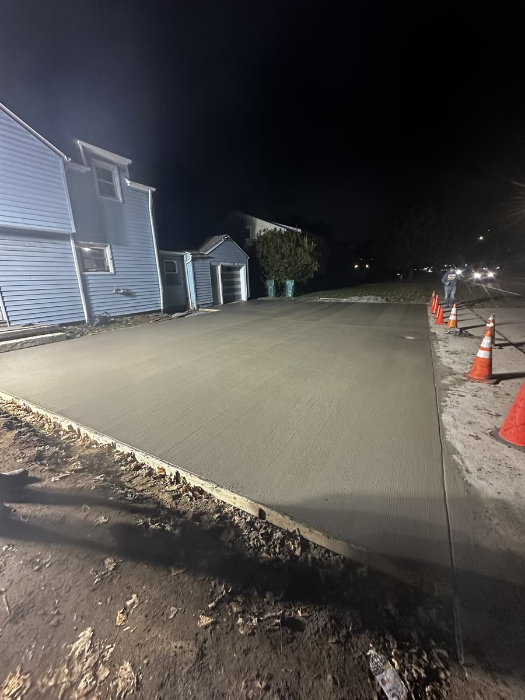
Nearly complete
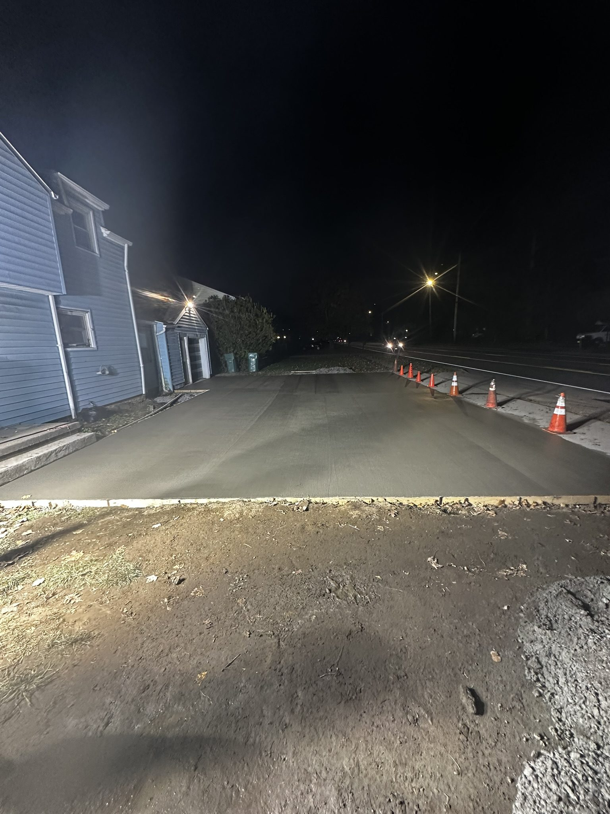
Completed surface
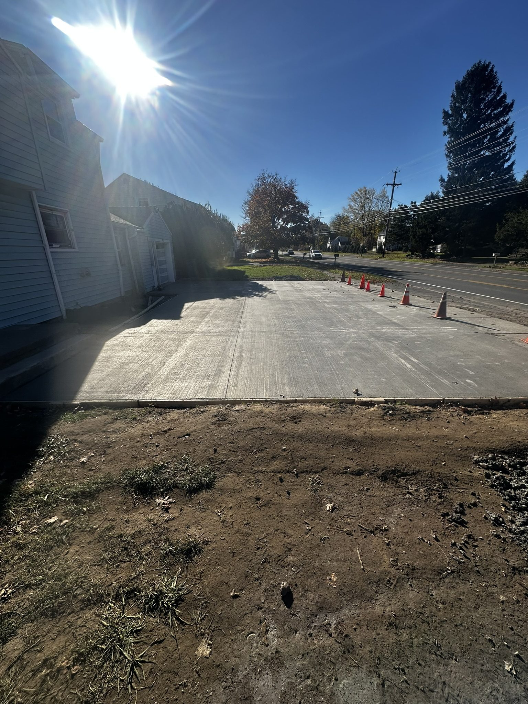
Finished detail
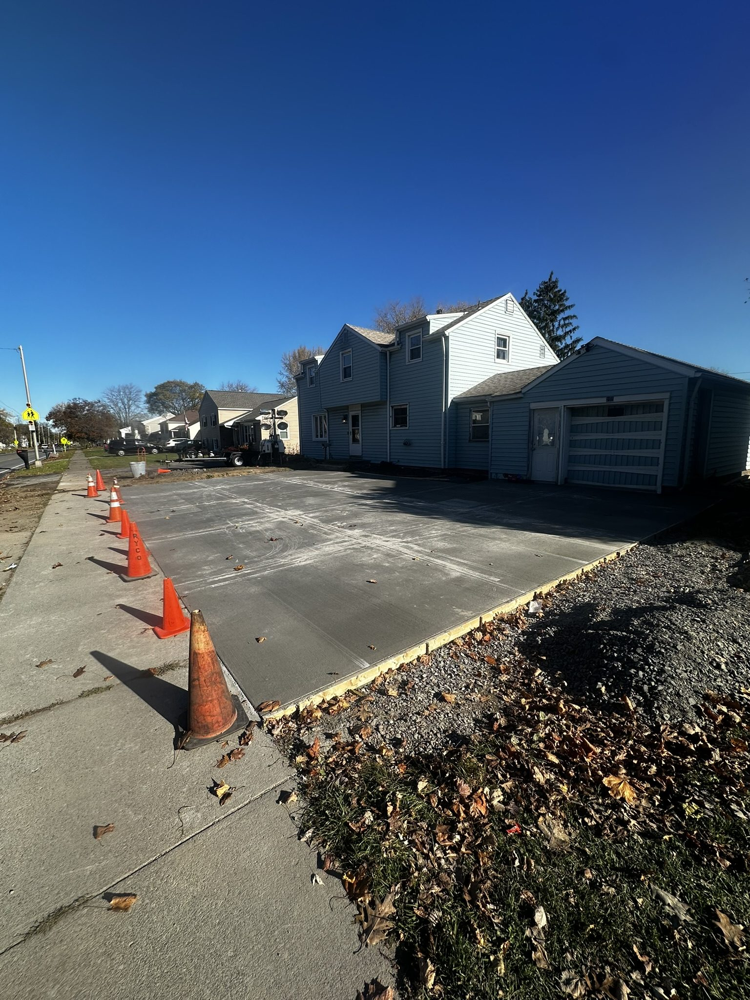
Finished driveway
Have a Driveway That Needs Work?
Call Don for a free on-site estimate. He'll come out, look at the job, and give you a straight number.
585-490-1600Free on-site estimates across Rochester, Monroe County, Ontario County, and Wayne County.